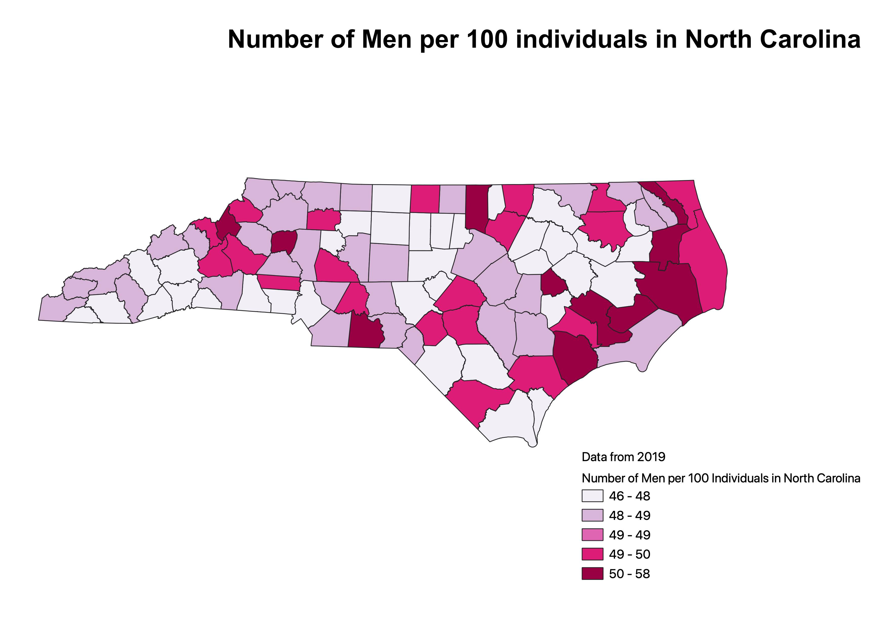
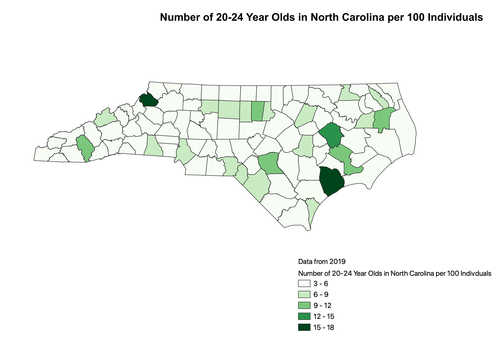
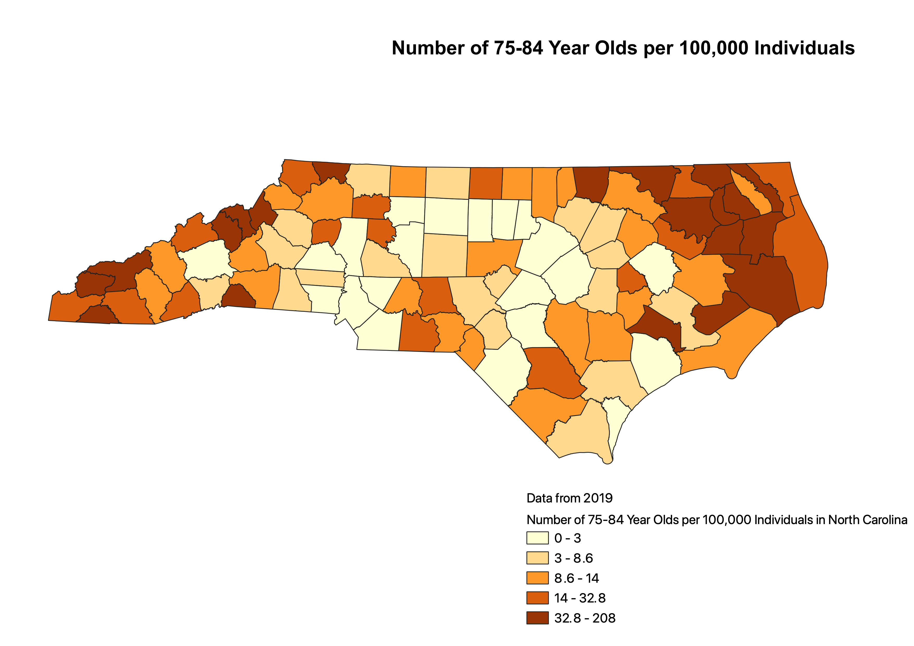

For this map, I divided the total number of men by the total population and multiplied by 100. Therefore this choloropleth illustrates the number of men per 100 individuals in each county in North Carolina. In addition, I used natural breaks classification. This method is designed to optimize the arrangement of a set of values into "natural" classes. One advanatge is that it identifies real classes within the data which gives an accurate representation of the data trends. One disadvantage is that this method can create classes that contain widely varying number ranges.

For this map, I divided the total number of 20-24 year olds by the total population and multiplied by 100. Therefore this choloropleth illustrates the number of 20-24 year olds per 100 individuals in each county. In addition, I used the equal interval classification. This method divides the attribute values into equal size ranges. One advantage is that the data can easily be interpreted. One disadvantage is that it fails to consider how data is distributed along the number line.

For this map, I divided total number of 75-84 year olds by the total population and multiplied by 100,000. Therefore this choloropleth illustrates the number of 75-84 year olds per 100,000 individuals in each county. I used equal count to illustrate this map. One advantage is that each class will be equally represented on the map. One disadvantage is that it shows inconsistent data because it irregularly distributes data.
